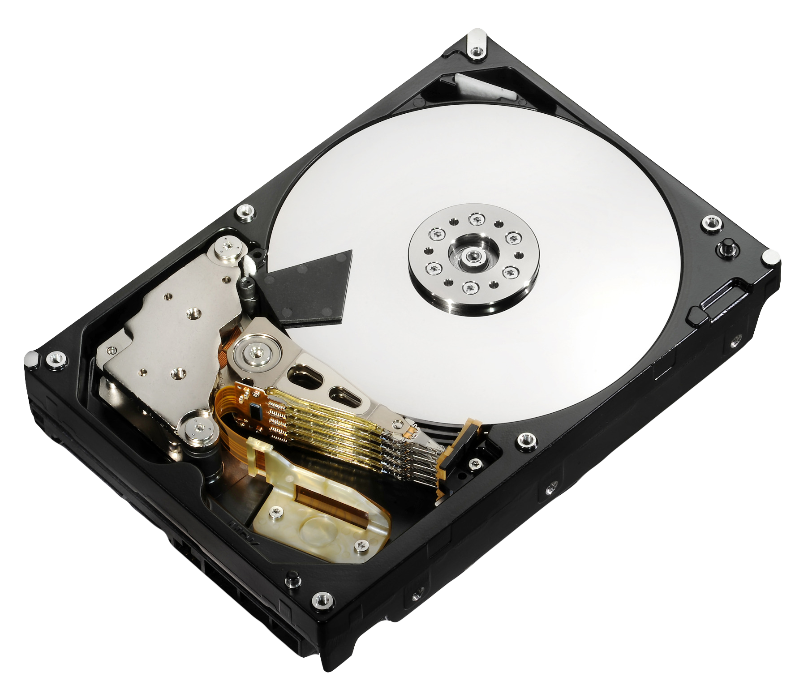
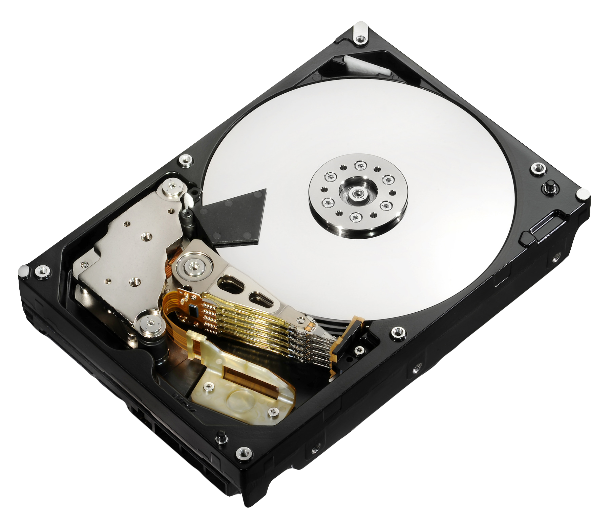
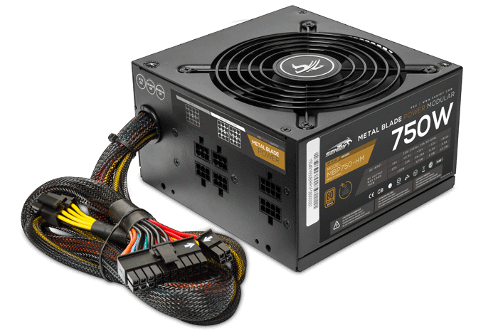
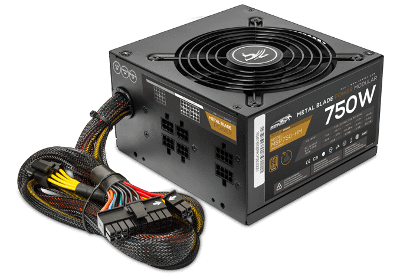

Das Motherboard und seine Funktionen
Das Motherboard, oder auch Hauptplatine genannt ist die wichtigste Leiterplatte eines Computers. Sie ist ein Zentraler Verbindungspunkt eines PCs, diese dient zur Kommunikation zwischen verschiedenen Elementen und kann zum Ansteuern externer Peripheriegeräte verwendet werden. Das Motherboard ist mit verschiedenen Komponenten verbunden, wie zum Beispiel den Chipsätzen zu denen der Southbridge & Northbridge-Chip zählen, welche im folgenden Verlauf erläutert werden.
Zudem sind die Prozessoren (CPUs), diese sind die logischen Schaltkreise eines Computers, welche auf die Aktionen des Rechners reagieren, mit der Hauptplatine verbunden. Und noch ein wichtiger zentraler Punkt, ist der Speicherort des Computers, mit dem Motherboard verbunden. Zu den externen Peripheriegeräten gehören unter anderem WLAN, Ethernet und zum Beispiel Grafikkarten.
Jedes Motherboard ist für verschiedene Komponenten und Peripheriegeräte ausgelegt. Um die maximale Leistung aufrecht zu erhalten und den Rechner noch Leistungsstärker zu machen. Im folgenden werden einige Hauptkomponenten eines Motherboards aufgelistet.


 

 

•Mainboard
•CPU => Prozessor
•RAM-Speicher => temporär
•GPU => Grafikkarte
•HDD/SSD => Festplatte
•Lüfter => Aufrechterhaltung der Temperatur
•Netzteil => Energieversorgung
•Speicherschnittstelle für eine Festplatte => permanent / in perpetuum
•Southbridge-Anschluss
•Northbridge-Anschluss
Unterschiede zwischen Southbridge und Northbridge
Der Southbridge-Chip ist für den Datentransfer und die Datensteuerung zwischen den verschiedenen Peripheriegeräten zuständig. Sie sitzt nahe bei den Peripherieanschlüssen, um auf einen möglichst geringen Weg eine elektrische Verbindung herzustellen. In den meisten Fällen ist der Southbridge langsamer als der Northbridge-Chip. Aus diesem Grund wird der Southbridge-Chip meist für Energieverwaltung o.ä. verwendet. Der Northbridge-Chip ist für die Steuerung und die Synchronisierung mit hohem Datentransfer, aufgrund ihrer niedrigen Latenz zuständig. Sie ist verbunden und interagiert mit dem Arbeitsspeicher und der Grafikkarte.
Der Rechner ist noch zusätzlich mit Bedienelementen ausgestattet, wie zum Beispiel dem HDMI- ; USB- ; Drucker- Anschluss, einem DVD/CD Laufwerk, Kopfhöreranschluss oder auch einen Anschluss für Lautsprecher.